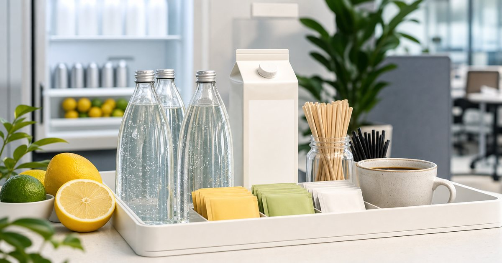

Elite Fashion｜辦公室飲品清單：氣泡飲、植物奶、茶包與咖啡怎麼搭
辦公室飲品不必只剩咖啡。把氣泡飲、植物奶、茶包與咖啡分成不同時段，茶水間會更有秩序，也更容易照顧多種口味。

飲品先按時段分，不要按冰箱空位分
飲品一多，茶水間很容易變成臨時倉庫。先分成早上、午餐後、下午會議與加班前四種情境，會比單純看冰箱還有沒有位置更清楚。
可以把 PV 女性微甜草本飲、KKM、Teavoya、Zymoïde、恩亞生活與 Xinto Coffee 放在同一張選擇表裡，但不要只看品牌名或包裝。編輯部會先看它們各自適合的位置：日常補給、待客分享、送禮、備餐、移動攜帶或辦公室共用，再決定哪些值得放進購物清單。
比較實用的順序是先確認 哪個時段最常需要飲品補位，以及是否需要多人共享。常見失誤是 看到新品就買，最後冰箱裡都是零散品項；在 公司茶水間、居家工作冰箱與共享辦公空間 裡，選擇能被穩定使用的品項，通常比一次買齊更重要。
- 早上可保留咖啡與植物奶。
- 下午會議可用茶包或清爽飲品降低準備成本。
植物奶要看搭配，不只看口味
植物奶如果只是單喝，判斷很簡單；若要搭配咖啡、麥片或點心，就要看風味是否會互相搶戲。辦公室共用時，更要看保存容量和開封後消耗速度。
可以把 KKM、Xinto Coffee、Teavoya 與恩亞生活 放在同一張選擇表裡，但不要只看品牌名或包裝。編輯部會先看它們各自適合的位置：日常補給、待客分享、送禮、備餐、移動攜帶或辦公室共用，再決定哪些值得放進購物清單。
比較實用的順序是先確認 是否常搭配咖啡、點心或早餐，以及冰箱容量。常見失誤是 買了大容量卻喝得慢，開封後管理反而麻煩；在 早餐會議、簡單午餐與茶水間共用飲品 裡，選擇能被穩定使用的品項，通常比一次買齊更重要。
- 共用情境可先選較容易搭配的風味。
- 開封後消耗速度比一次單價更需要先想清楚。
茶包和草本飲適合下午，不代表要寫成效果
下午想換一杯飲品，不一定要再喝咖啡。茶包、氣泡飲或草本風味飲可以提供不同口感，但文章與選購都應回到味道、甜度、保存與場合，不必把它們說成身體效果。
可以把 PV 女性微甜草本飲、Teavoya、Zymoïde 與恩亞生活 放在同一張選擇表裡，但不要只看品牌名或包裝。編輯部會先看它們各自適合的位置：日常補給、待客分享、送禮、備餐、移動攜帶或辦公室共用，再決定哪些值得放進購物清單。
比較實用的順序是先確認 甜度、氣泡感、是否適合冷藏，以及是否方便多人分享。常見失誤是 把飲品當成解決疲勞或身體問題的答案；在 下午長會、文件校對與不想再喝咖啡的時段 裡，選擇能被穩定使用的品項，通常比一次買齊更重要。
- 用風味與飲用情境描述即可。
- 草本、酵素等字眼不等於可以推論效果。
咖啡仍然重要，但要有自己的位置
咖啡不需要退出茶水間，只是要有清楚角色。早上或需要專注的時段，可以保留固定咖啡選項；下午與待客則可以用茶或其他飲品分流。
可以把 Xinto Coffee、Teavoya、KKM 與 PV 女性微甜草本飲 放在同一張選擇表裡，但不要只看品牌名或包裝。編輯部會先看它們各自適合的位置：日常補給、待客分享、送禮、備餐、移動攜帶或辦公室共用，再決定哪些值得放進購物清單。
比較實用的順序是先確認 咖啡是否已經滿足日常需求，還是只是習慣性補貨。常見失誤是 所有時段都只買咖啡，讓不喝咖啡的人沒有選擇；在 白領辦公室、設計工作室與常有客戶來訪的空間 裡，選擇能被穩定使用的品項，通常比一次買齊更重要。
- 咖啡補給可維持少量穩定款。
- 非咖啡飲品負責補足待客與下午時段。
冰箱管理決定飲品能不能被喝完
飲品管理最現實的問題，是開封、冷藏與到期。若沒有固定位置與補貨規則，任何漂亮清單都會變成冰箱裡的壓力。
可以把 KKM、PV 女性微甜草本飲、恩亞生活、Zymoïde 與 Teavoya 放在同一張選擇表裡，但不要只看品牌名或包裝。編輯部會先看它們各自適合的位置：日常補給、待客分享、送禮、備餐、移動攜帶或辦公室共用，再決定哪些值得放進購物清單。
比較實用的順序是先確認 開封後保存、單瓶容量與每週消耗量。常見失誤是 把冰箱當展示櫃，卻沒有人負責喝完或補貨；在 小型辦公室、家庭冰箱與共享工作室 裡，選擇能被穩定使用的品項，通常比一次買齊更重要。
- 同一時間不要開太多瓶。
- 用前排放即期品，後排放未開封品。
一張穩定飲品清單，只需要四個位置
最容易維持的辦公室飲品清單，其實只需要四個位置：咖啡、茶、冷藏飲品和搭配型飲品。先讓每個位置有穩定選項，再慢慢輪替新口味。
可以把 PV 女性微甜草本飲、KKM、Teavoya、Zymoïde、恩亞生活與 Xinto Coffee 放在同一張選擇表裡，但不要只看品牌名或包裝。編輯部會先看它們各自適合的位置：日常補給、待客分享、送禮、備餐、移動攜帶或辦公室共用，再決定哪些值得放進購物清單。
比較實用的順序是先確認 哪四種飲品真的會被喝完，而不是看起來豐富。常見失誤是 一次買太多新品，沒有任何一款成為穩定補給；在 需要兼顧同事口味、來客與自己工作節奏的茶水間 裡，選擇能被穩定使用的品項，通常比一次買齊更重要。
- 咖啡與茶負責基礎需求。
- 冷藏飲品與植物奶負責變化與搭配。
FAQ
辦公室飲品一定要準備很多種類嗎？
不需要。先保留咖啡、茶、冷藏飲品與搭配型飲品四個位置，再依實際消耗慢慢輪替即可。
草本飲或酵素飲可以怎麼寫才保守？
以風味、甜度、口感、保存與飲用情境描述，不推論保健、療效或身體改善。
植物奶適合放辦公室嗎？
可以，但要注意開封後消耗速度、冰箱容量與搭配方式。若喝得慢，選擇小容量會更好管理。
下一步建議
如果你想讓茶水間更有秩序，可以先分出咖啡、茶、冷藏飲品與植物奶四個位置。
重要警語
本文為一般辦公室飲品與日常搭配情境整理，不宣稱任何保健、療效或身體改善效果。食品飲品保存、價格、活動與庫存請以商品頁公告為準。
本文含品牌／商品導購連結；若你透過部分商品連結前往選購，Elite Fashion 可能取得合作收益。本文仍以編輯判斷與使用情境整理為主，價格、規格、活動與庫存請以商品頁公告為準。